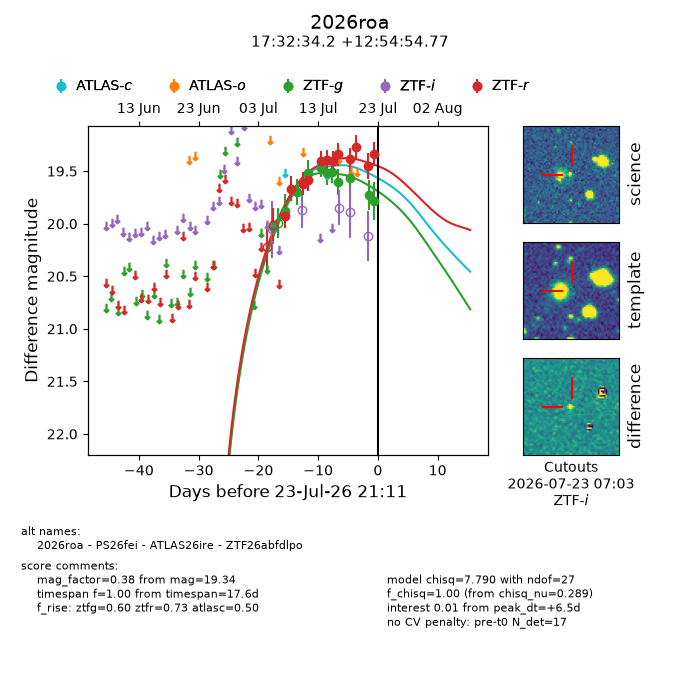
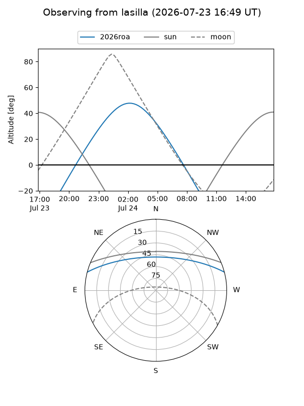
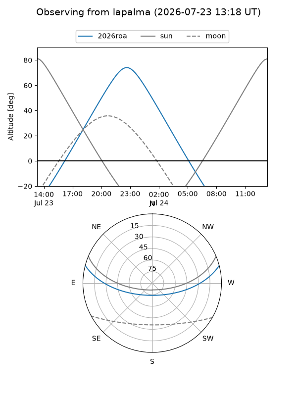
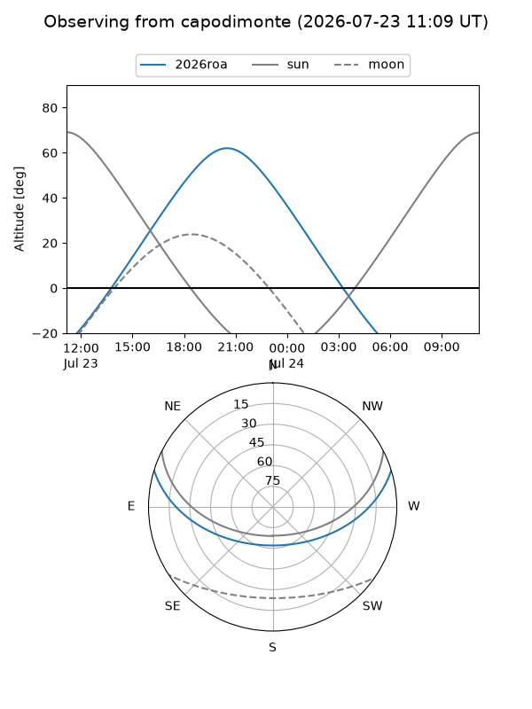
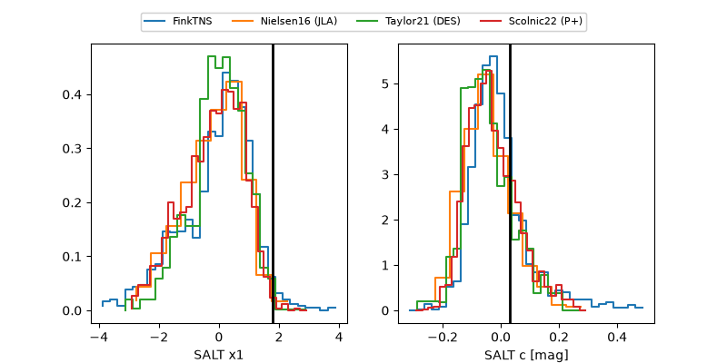

2026roa
Target 2026roa at 2026-07-23 21:14
Aliases and brokers:
FINK-ZTF: ztf.fink-portal.org/ZTF26abfdlpo
Lasair-ZTF: lasair-ztf.lsst.ac.uk/objects/ZTF26abfdlpo
ALeRCE-ZTF: alerce.online/object/ZTF26abfdlpo
YSE-PZ: ziggy.ucolick.org/yse/transient_detail/2026roa
TNS name: wis-tns.org/object/2026roa
Direct TNS query: direct search
alt names
ZTF26abfdlpo (ztf,fink_ztf)
2026roa (tns,yse)
ATLAS26ire (atlas)
PS26fei (panstarrs)
Coordinates:
equatorial (ra, dec) = 263.1426,+12.91521
equatorial (HMS+DMS) = 17:32:34.21,+12:54:54.77
galactic (l, b) = (35.9872,+23.23970)
Flags:
TNS type: nan
peak dt: +6.5
Photometry:
last atlasc=19.43, ztfg=19.79, ztfr=19.34
1 atlasc, 11 ztfg, 12 ztfr detections
Lightcurve

Visibility



Additional plots
